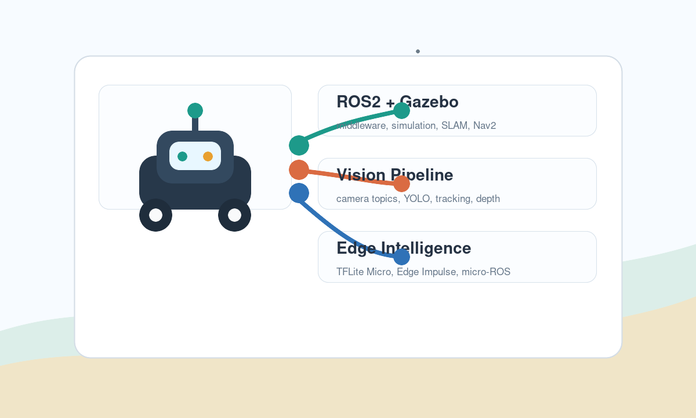

AI Robotics Engineer track
60 days to build a simulation-first, edge-aware VisioBot portfolio project.
Built from the local docs folder and enriched with current web resources: ROS2 Jazzy, Gazebo Harmonic, YOLO vision, TinyML on ESP32, micro-ROS, and final demo packaging.
60
days
4
phases
240+
tasks
150+
links

Research base